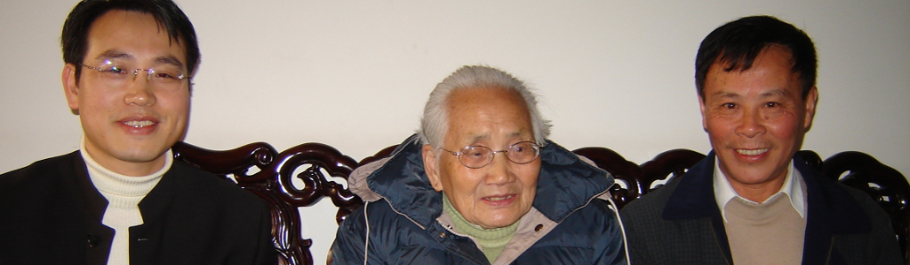
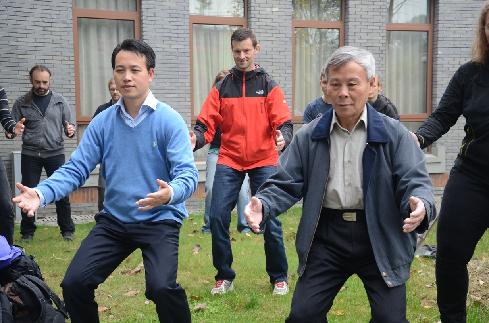
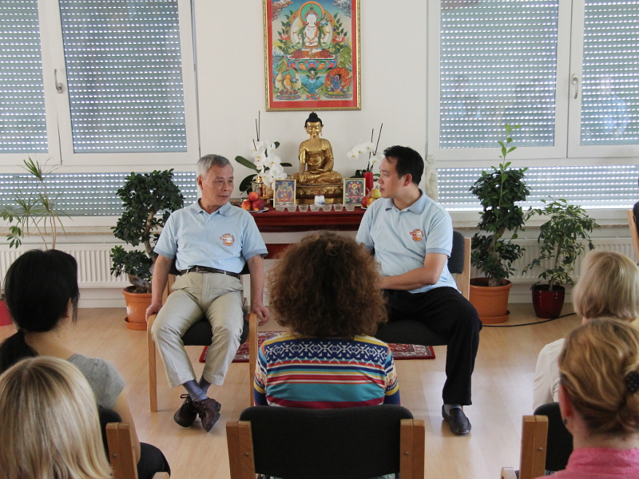

少林内劲一指禅的传承
起源
少林内劲一指禅是中国传统中一套高度完善、正宗的气功体系。其起源可追溯至中国河南省的北少林寺，大约形成于公元5世纪。约150年后，这一方法传入由道广大师于公元645年在福建省创建的南少林寺，并在此不断发展与完善。少林内劲一指禅的传承被认为可上溯至达摩祖师（菩提达摩）。在第六祖慧能（638—713）时期，禅宗分化出众多流派，其中之一便是少林内劲一指禅。
这一直接传承体系中的重要祖师包括：
僧稠（480—560）与达摩（？—约536） → 慧可（487—593） → 僧璨（？—606） → 道信（580—651） → 弘忍（602—675） → 慧能（638—713）与道广 → ……
顺标·杜（1856—1948） → 海腾（阙阿水 / 1919—1982） → 姚金圣（1947年生） → 郑博音（1971年生）
在传统传承中，姚金圣大师被尊为少林内劲一指禅第十九代传人，郑博音大师继承其法脉，为第二十代传人。郑博音在欧洲的第一位入室弟子是尼尔斯·博恩博士（1977年生）。
少林内劲一指禅的传承
少林内劲气功（亦称“少林内劲一指禅”）源自北方少林寺的禅修实践，其历史可追溯至公元500年左右。后来，这一功法在南方少林寺得到了保存与进一步发展。

少林内劲一指禅由佛教僧侣代代相传，历时一千五百余年，一直秘传于少林寺内。1945年，年仅25岁的阙阿水（海腾）宗师离开少林寺，定居上海。正是通过他，这一功法在20世纪60年代首次走出寺院，开始在社会上流传。少林内劲一指禅因其显著的疗效、易于学习的特点，以及能够培养向他人发放外气（发放外气、法放外气）以助人疗愈的能力，而赢得了极高的声誉。
阙阿水宗师不仅运用此法为患者治疗，同时也开展了科学研究。1978年，他与上海中医学院及上海交通大学合作，就气的辐射与传递进行了研究，并取得了成功成果。1981年，阙宗师与其弟子首次在上海向公众系统介绍了少林内劲一指禅。 20世纪80年代，少林内劲一指禅作为气功体系正式获得中国政府的认可，同时也得到了国家气功科学研究机构的批准，获得了传播许可。1999年，该机构将少林内劲一指禅列为中国十大优秀气功体系之一，从国家最高层面肯定了其在保健与临床应用方面的价值。仅在中国，目前就有三百多万人练习内劲一指禅以维护自身健康。 20世纪60年代，在阙阿水宗师的努力下，少林内劲一指禅的秘传方法首次走出少林寺。他以帮助有健康问题的人为毕生使命，治疗了无数患者，其显著的疗效使其声名远播，影响力远超上海地区。阙宗师的第一位、也是最为器重的弟子是姚金圣大师。自20世纪80年代以来，姚金圣大师及其弟子与多家科研机构和高校合作，对气功的作用进行系统研究，力图建立科学基础。在阙阿水宗师之后，作为第十九代传人，姚金圣大师为该功法的进一步传播做出了巨大贡献。
最终，姚金圣大师将向西方世界传播少林内劲气功这一重任，托付给了其嫡系传人中唯一的授权代表——郑博音大师。作为姚金圣大师的亲传弟子，郑博音是这一直接传承中唯一在西方世界系统传播并获得正式授权教授少林内劲一指禅的代表。

作为禅宗佛教中至关重要的禅修组成部分，少林内劲气功属于那些历经传统、纯正传承下来的正统气功体系。它具备所有可考证的特征，包括清晰的师承谱系、循序渐进的功法层级与能力进阶，以及身心兼修的训练理念。
姚金圣大师欧洲之行
来自上海的姚金圣大师在为期约两周的欧洲之行中，以其温和而充满力量的个人魅力深深吸引了众多学员（包括德国学员）。 姚金圣大师欧洲之行
姚金圣大师是少林内劲一指禅（Shaolin Neijin Qigong）的第十九代传人，也是郑博音大师的恩师；郑博音大师作为第二十代传人，已在西方世界致力于该功法的正统传播逾十五载。
每当姚大师步入会场，他身上散发出的宁静与澄澈之气便令人印象深刻。他举止自然，让接触过他的人忘却了语言障碍，也消除了初见时的羞涩感。“感觉就像是直接的心灵交流，”一位学员在谈及初次见到大师时的感受时这样说道。另一位学员则回忆道：“我感到安全、被接纳，内心也格外平静。”
在马格德堡（Magdeburg），姚大师不仅耐心解答了习练者们的疑问，还分享了自己修习少林内劲一指禅的心得体会。此外，他还与郑博音大师一道，就如何在实际练习中优化功效提供了许多宝贵的指导建议。

少林内劲气功的能量传输
少林内劲气功的能量传输（发功）技术，为向患者传递疗愈信息并疏通能量阻滞提供了切实有效的途径。若由经验丰富且具备资质的习练者施展，该技术甚至能开启通往宇宙智慧与潜藏异能的大门。
例如，受功者可能会在无意识中做出此前从未学过的功夫招式。鉴于其蕴含着巨大的能量潜能，这项能量传输技术仅由那些具备高度责任感、高尚武德且获得正式授权的气功习练者方可施用。
该功法的诸多潜能，在其名称中得到了清晰的体现：
- 少林 —— 指明了该功法的起源地；
- 内劲 —— 代表内在的力量，即身与心的潜能及能量；
- 一指 —— 字面意为“一根手指”，但在该功法语境下，特指那些通过手指进行的特殊练习，例如用于传导能量的功法；
- 禅 —— 意指一种特殊的佛教形式，同时也特指一种旨在培养慈悲心、开启内在智慧的深度禅修境界。
少林内劲气功的适用人群
原则上，少林内劲气功的各项功法适用于所有人，因为其习练内容可根据习练者个体的健康状况进行灵活调整。因此，即使是身有残疾或罹患重症的人士，亦可通过习练特定的功法，开启通往疗愈能量的通道，从而获得身心康复的契机。
无论长幼，人们都能从这些调和性练习中获益；只需短短一段时间，这些练习便能显著提升幸福感，并改善专注力、抗压能力与身心平衡。